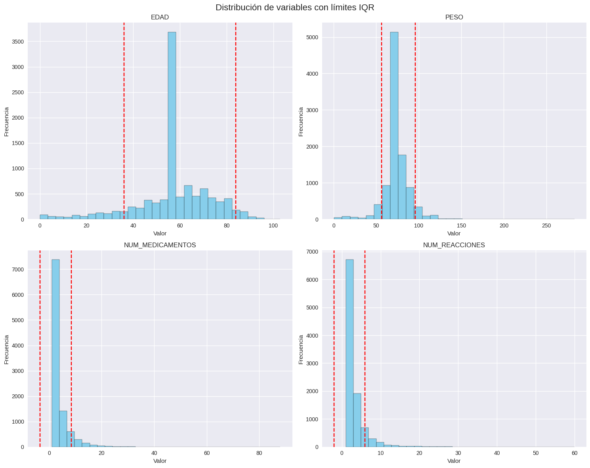
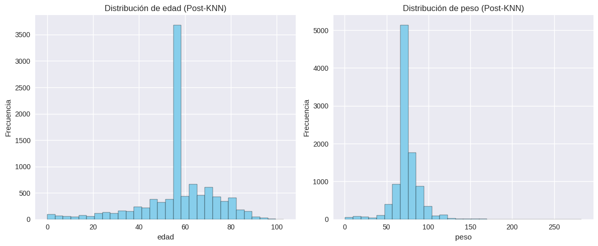
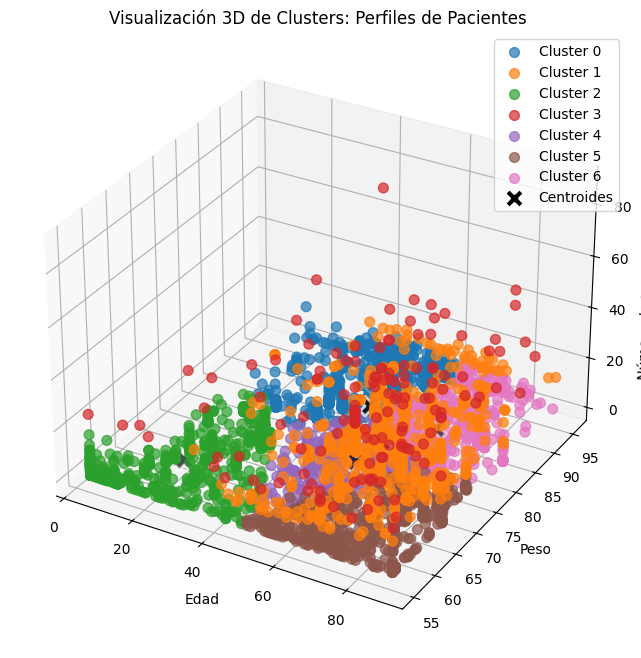
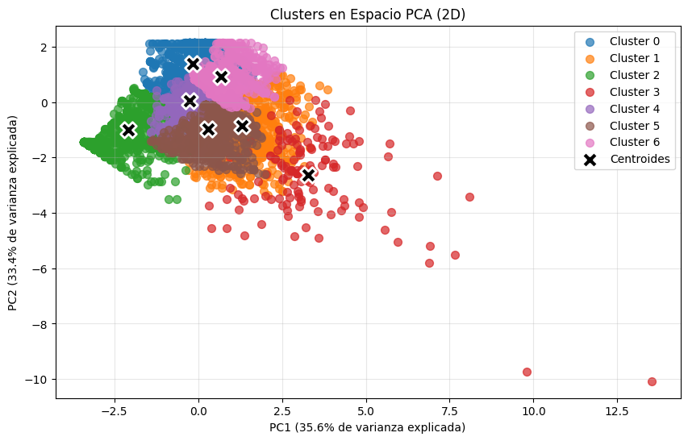

Parte 3: Modelos de Clasificación
Ambos modelos buscaron predecir la gravedad del evento (grave o no grave) en base a variables clínicas.


patrones ocultos en los efectos adversos reportados a la FDA
Los eventos adversos son reacciones no deseadas que pueden surgir durante el uso de medicamentos, desde efectos leves hasta consecuencias graves. La farmacovigilancia, que busca prevenir estos riesgos, se apoya en la minería de datos para identificar patrones entre pacientes, medicamentos y efectos reportados. Este proyecto se enfocó en predecir la gravedad de los eventos y, sobre todo, en identificar perfiles de riesgo asociados, facilitando una mejor toma de decisiones clínicas y regulatorias.
Antes de modelar, exploramos quiénes eran los pacientes y cómo se distribuían variables como la edad, el número de medicamentos y la gravedad de los eventos.
📊 Distribución de edades, gravedad y medicamentos
Realizamos un proceso exhaustivo de limpieza y codificación de datos. Este paso fue crucial para garantizar que los modelos y el análisis posterior fueran confiables.
📉 Distribución de valores nulos
| Columna | Valores Nulos | Porcentaje (%) |
|---|---|---|
| peso | 8044 | 80.44 |
| edad | 3381 | 33.81 |
| edad_categoria | 3344 | 33.44 |
| sexo | 0 | 0.00 |
| medicamento_principal | 0 | 0.00 |
| reaccion_principal | 0 | 0.00 |
| pais | 0 | 0.00 |
| fecha | 0 | 0.00 |
| gravedad | 0 | 0.00 |
| resultado | 0 | 0.00 |
| num_medicamentos | 0 | 0.00 |
| num_reacciones | 0 | 0.00 |
manejo de valores nulos con KNN
Ambos modelos buscaron predecir la gravedad del evento (grave o no grave) en base a variables clínicas.
🎯 Se identificaron 7 clusters con perfiles únicos.
 | Cluster | Pacientes | Edad Prom. | Peso Prom. | Medicamentos Prom. |
|---|---|---|---|---|
| 0 | 1212 | 43.8 | 89.6 | 2.7 |
| 1 | 880 | 63.6 | 74.5 | 9.8 |
| 2 | 830 | 21.3 | 62.8 | 2.8 |
| 3 | 144 | 60.5 | 74.2 | 23.1 |
| 4 | 4174 | 58.0 | 73.0 | 1.8 |
| 5 | 1264 | 75.2 | 62.7 | 2.7 |
| 6 | 1496 | 68.3 | 83.9 | 2.4 |
📈 Relaciones clave descubiertas:
Los modelos predictivos funcionan, pero no explican quiénes son los pacientes de riesgo. El clustering reveló segmentos de pacientes con características claras, lo que puede orientar decisiones clínicas. El grupo con mayor medicación (Cluster 3) representa un perfil de riesgo alto que merece mayor monitoreo.
Objetivos no completados: